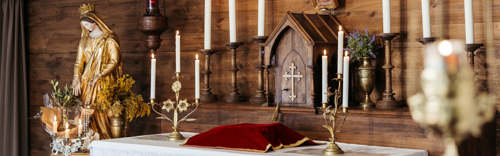
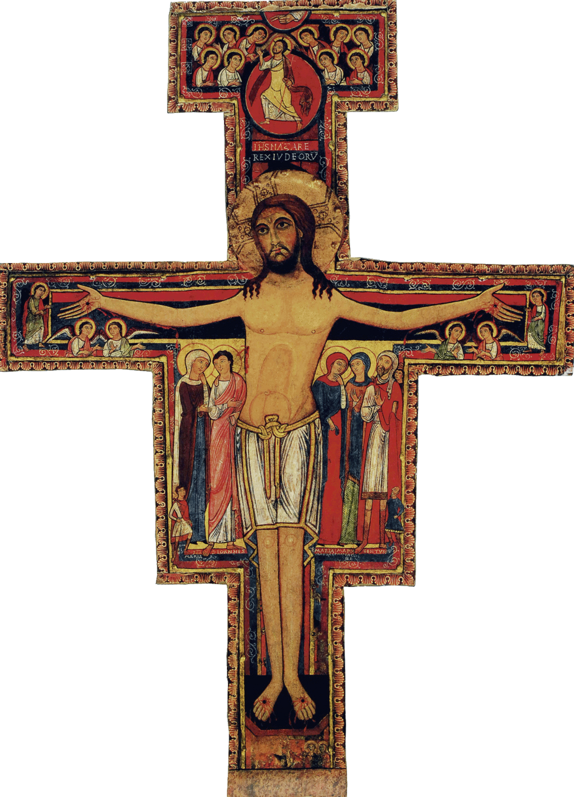
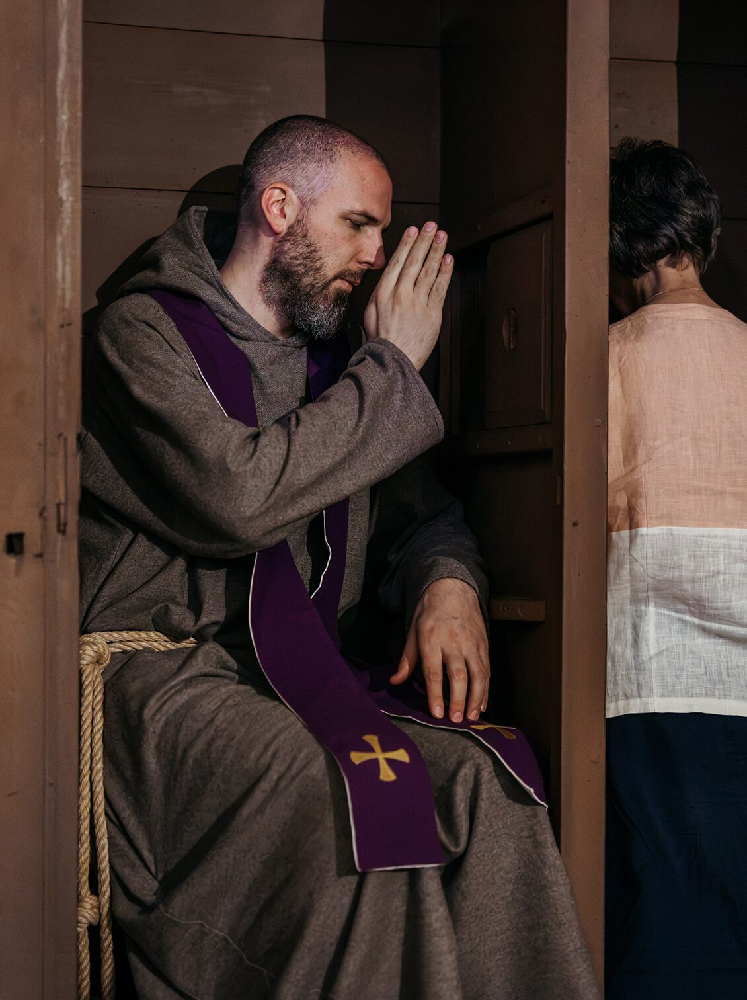
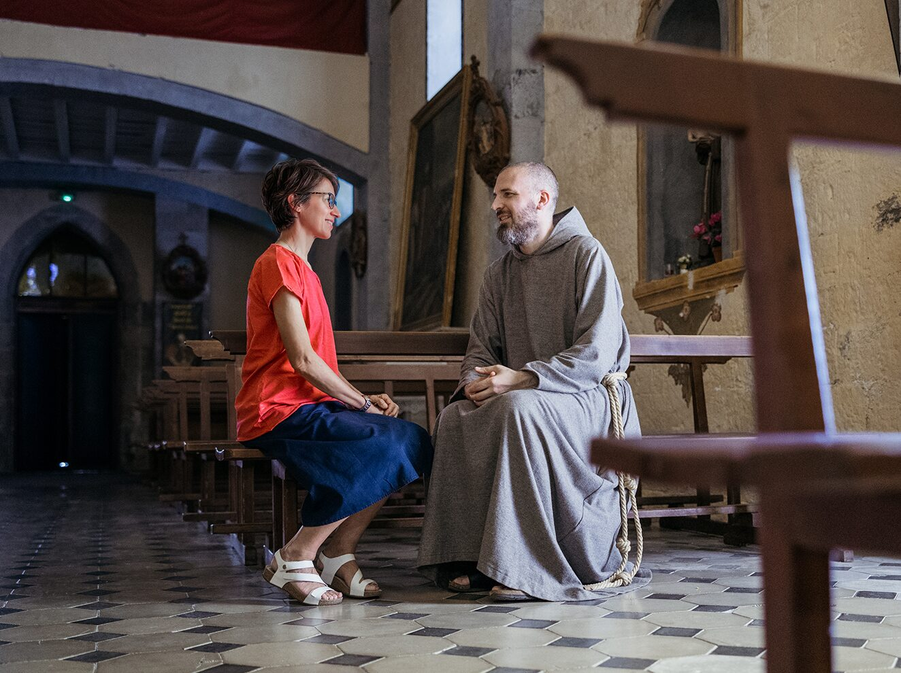
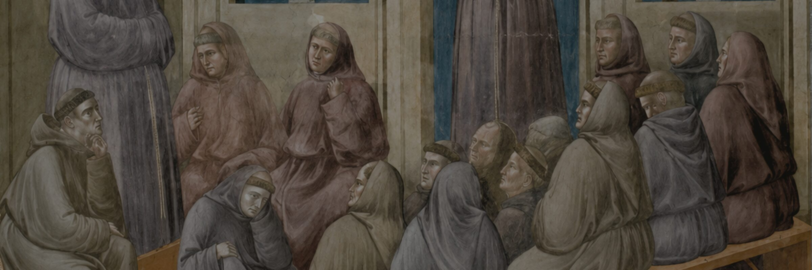
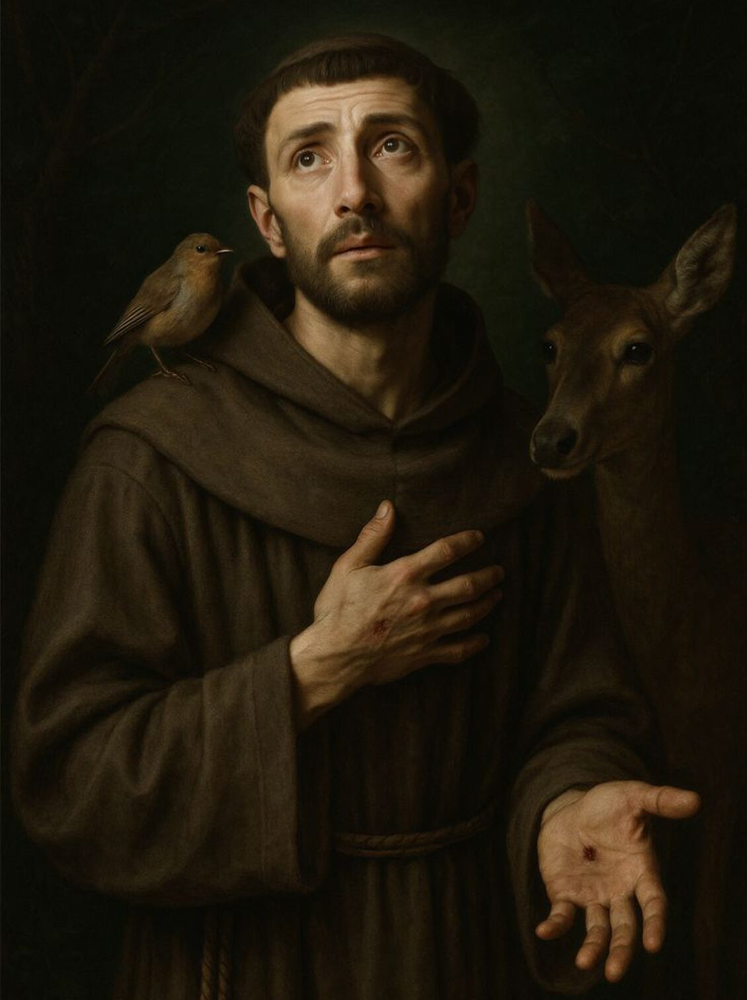
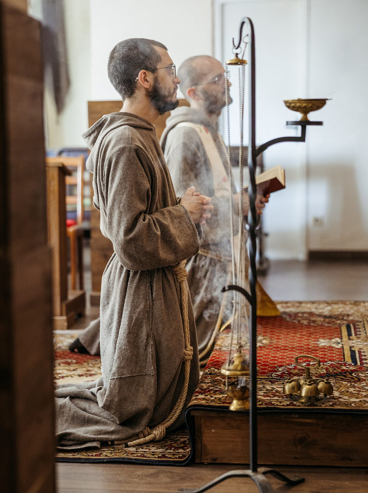
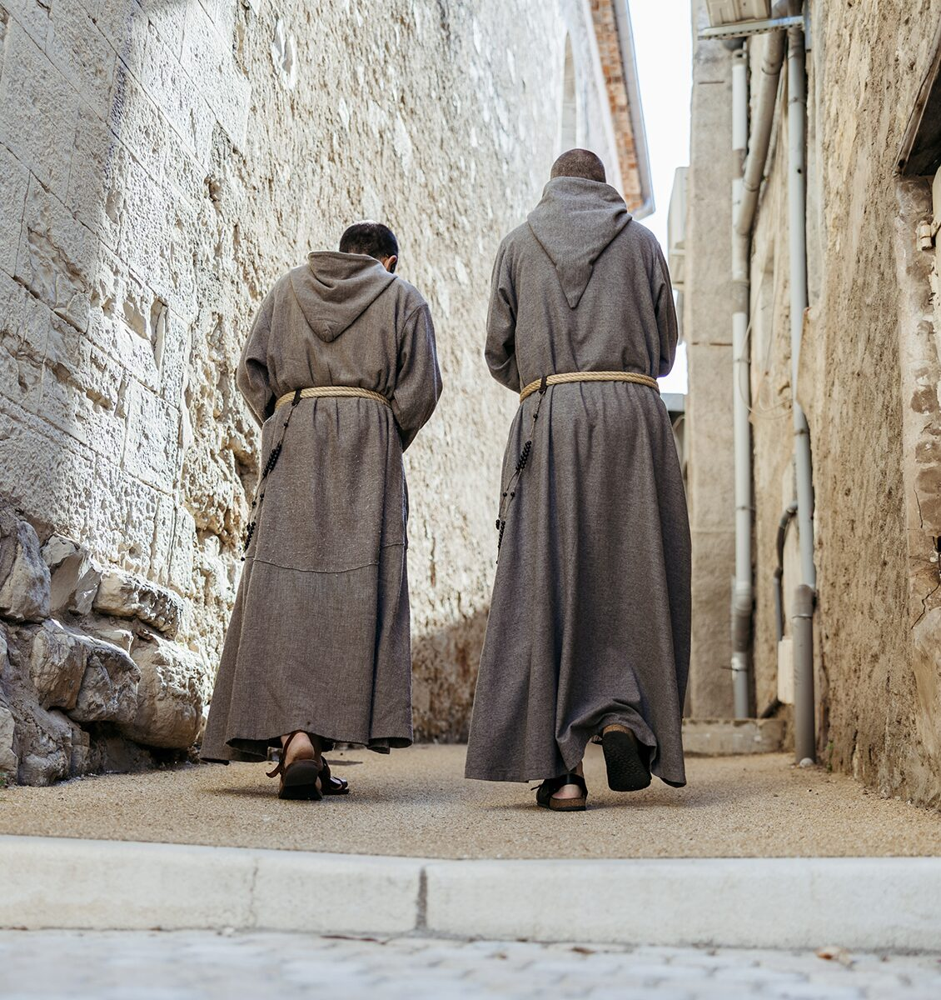
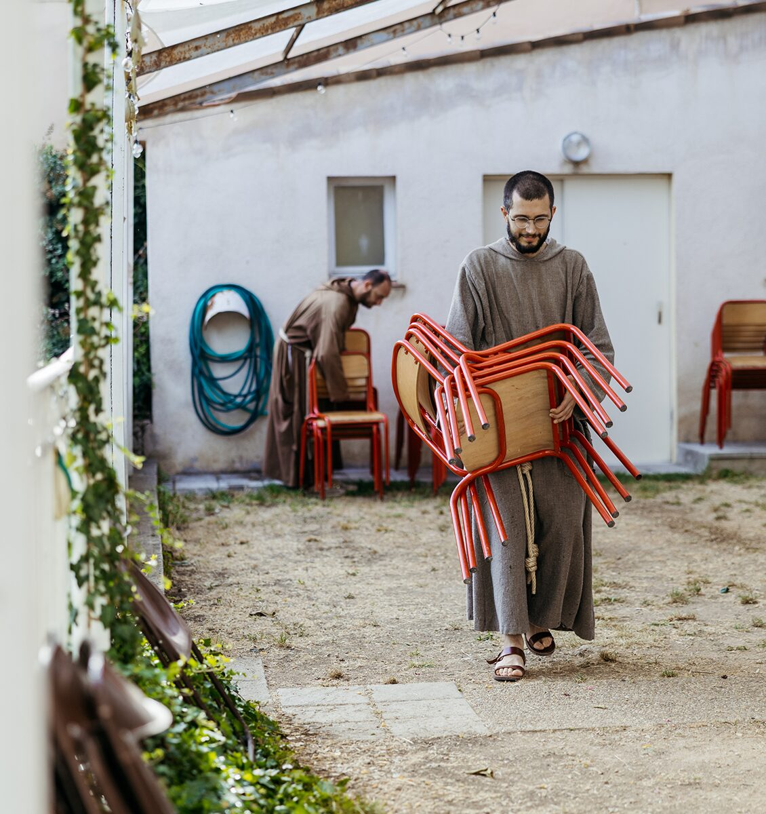
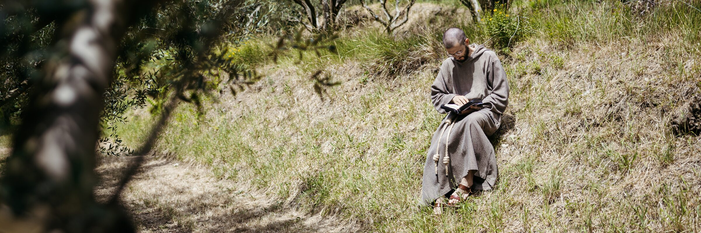

La spiritualité de la communauté
Deux piliers inséparables
Une vie fondée sur la compassion et la communion fraternelle
La compassion et la communion : le charisme propre de cette fraternité, vécu dans la simplicité séraphique de François d'Assise.
« Réjouissez-vous avec ceux qui sont dans la joie, pleurez avec ceux qui pleurent »— Romains 12, 15
La compassion : souffrir-ensemble
La vie des frères se fonde sur le pilier de la compassion. Compassion signifie souffrir-ensemble. Marie au pied de la Croix enseigne l'amour joyeux et sincère du don de soi à l'autre.
La conversion de saint François : la rencontre avec le Crucifix
Le moment décisif de la vie de François a lieu devant le Crucifix de Saint-Damien.
« Va, répare ma maison », lui dit le Seigneur.
Dès cet instant, écrivent les Sources Franciscaines, se fixa dans son âme la compassion du Crucifié — une union avec le Christ souffrant qui l'accompagnera jusqu'aux stigmates reçus à La Verna.
François, va, répare ma maison qui, comme tu le vois, tombe en ruine.

Prière
La compassion dans la prière
À l'exemple de saint François, les frères contemplent Jésus Crucifié et Marie à ses pieds. Leurs souffrances enseignent ce qu'est la miséricorde : se pencher sur la misère, se faire proche de celui qui souffre, avoir de la compassion. Chaque jour, la communauté récite le Chapelet des Sept Douleurs, se laissant former par la compassion maternelle de Marie, elle qui a accepté la volonté de Dieu jusque dans l'épreuve, jusqu'au pied de la Croix.

Le Chapelet des Sept Douleurs.
Depuis des siècles, l'Église contemple ces sept mystères de la vie de Jésus et de Marie :
- Marie accueille dans la foi la prophétie de Siméon.
- Marie fuit en Égypte avec Jésus et Joseph.
- Marie cherche Jésus perdu à Jérusalem.
- Marie rencontre Jésus sur le chemin du Calvaire.
- Marie se tient près de la Croix de son Fils.
- Marie accueille Jésus descendu de la Croix.
- Marie confie au tombeau le corps de Jésus, dans l'attente de la Résurrection.
Pour chaque douleur, on récite un Notre Père, 7 Je vous salue Marie et un Gloire au Père.
Apostolat
La compassion dans l'apostolat
De la méditation naît l'activité apostolique tournée en particulier vers les plus nécessiteux. « Si la foi n'a pas les œuvres, elle est morte en elle-même » (cf. Jc 2, 17). Cela se réalise à travers les œuvres de miséricorde spirituelle et corporelle.

Portez les fardeaux les uns des autres : c'est ainsi que vous accomplirez la loi du Christ.
— Galates 6, 2La miséricorde spirituelle
Les sept œuvres de miséricorde spirituelle :
- Conseiller ceux qui doutent.
- Enseigner les ignorants.
- Avertir les pécheurs.
- Consoler les affligés.
- Pardonner les offenses.
- Supporter patiemment les personnes pénibles.
- Prier Dieu pour les vivants et pour les morts.

Les frères de notre communauté se font proches de ceux qui ont besoin d'être écoutés ou pardonnés, dans le sacrement de la réconciliation. Le soutien spirituel proposé par la communauté se concrétise en temps de retraite spirituelle, d'enseignements, de parcours de formation, d'accompagnement.
La miséricorde corporelle
Les sept œuvres de miséricorde corporelle :
- Donner à manger à ceux qui ont faim.
- Donner à boire à ceux qui ont soif.
- Vêtir ceux qui sont nus.
- Loger les pèlerins.
- Visiter les malades.
- Visiter les prisonniers.
- Ensevelir les morts.
Dans les maisons de retraite, dans les prisons, dans les hôpitaux, en distribuant nourriture et vêtements à ceux qui en ont besoin, les frères se rendent disponibles pour aider matériellement leur prochain, selon les besoins du lieu.
Si tu ressens le besoin de parler, de te confier à quelqu'un, les frères sont disponibles pour t'accueillir.

« Le Seigneur me donna des frères »— Saint François
La communion fraternelle
Le second pilier de la vie des frères franciscains de la Compassion est la communion fraternelle. Communion signifie vivre unis à Dieu et unis aux frères, comme dans une famille : en partageant les temps de prière, les espaces, les biens et le travail.
Un amour particulier pour les frères
Dans son Testament, saint François écrit avec une simplicité évangélique : « Le Seigneur me donna des frères ». La communion dans la vie fraternelle est un don, une grâce de Dieu. Saint François demande que les frères s'aiment d'un amour plus grand que celui d'une mère qui aime et nourrit son enfant.
Les frères franciscains de la Compassion veulent incarner cet idéal, vivre ensemble la même vocation : une école de charité, de compassion continuelle.
Que chacun manifeste avec confiance à l'autre ses besoins, car si la mère nourrit et aime son enfant charnel, avec combien plus d'affection chacun doit-il aimer et nourrir son frère spirituel ?
— Saint François, Règle bullée, 6
Prière
La communion dans la prière
La communion fraternelle prend racine dans la prière chorale. Les frères se réunissent chaque jour pour prier ensemble : centre de leur vie et source de grâces pour l'apostolat. Saint François rappelait aux frères prédicateurs que les grâces de l'apostolat dépendent des prières précieuses du frère le plus simple de la communauté.

Là où deux ou trois sont réunis en mon nom, je suis au milieu d'eux.
— Mt 18, 20Apostolat
La communion dans l'activité
La communion se manifeste aussi dans les repas partagés, dans le travail quotidien mis au service de la fraternité, dans la disponibilité concrète de chacun pour le bien des autres. Dans l'apostolat, les frères partent deux par deux, comme saint François le commandait, à la suite de Jésus-Christ, portant la paix et l'annonce de l'Évangile. La charité fraternelle, la communion entre les frères en mission, est déjà, elle-même, un témoignage.
Allez, mes bien-aimés, deux par deux à travers le monde, et annoncez aux hommes la paix et la pénitence en rémission des péchés.
— Saint François, Celano, Vita I

Découvrez la vie quotidienne des frères.

Te sens-tu attiré par cette vocation ?
Compatir à la souffrance des autres, dans l'esprit de fraternité : notre vocation naît de la rencontre de ces deux regards évangéliques.
Si tu ressens le désir de quelque chose de plus grand, ne garde pas cette question pour toi seul. Le discernement n'est pas une décision soudaine : c'est un chemin progressif, et nous sommes là pour le parcourir avec toi.
Comment comprendre si Dieu t'appelle ?
Soutenez les frères et leur apostolat.
Votre contribution permettra à la communauté de vivre concrètement la compassion et la communion de l'Évangile.
SOUTENEZ-NOUS